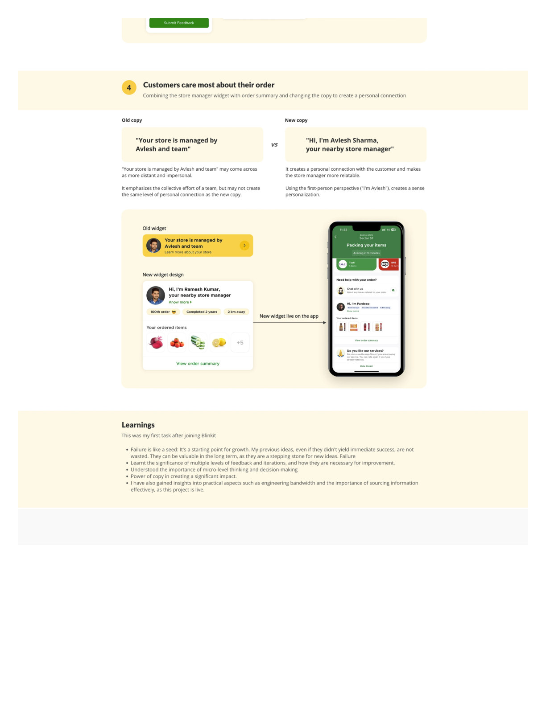

BLINKIT · Q-COMMERCE · UI/UX CASE STUDY
Blinkit — Store Manager Widget
The checkout screen showed customers "A team member is packing your order." No name. No face. No story. This project redesigned that widget into a human moment — and it took three failed approaches before the real insight emerged: customers don't need information, they need connection.
View full PDF ↗
01 — OVERVIEW
A widget that was doing nothing
Blinkit's checkout screen showed a small widget in the order status section — designed to surface the store manager packing the order. In its original form it said: "A team member is packing your order." Nothing more.
The goal was to redesign this widget to reduce anxiety during the waiting period, build trust in the platform, and create a moment of human connection between the customer and the person behind their order.
02 — PROBLEM
What the widget was missing
"The widget existed — but it communicated nothing. No name, no face, no story. It was an empty space where a human connection could have lived."
01
No identity
"A team member" could be anyone. The anonymity removed all potential for warmth.
02
No context
Customers had no sense of what was happening — just a vague assurance that something was.
03
Missed opportunity
The checkout wait is the highest-anxiety moment of a delivery app — and the widget was doing nothing to reduce it.
04
No differentiation
Every other q-commerce app had the same generic packing status — this was a chance to be meaningfully different.
03 — USERS
Who sees this widget
Customer (order placed)
- Just confirmed their order — now waiting
- Moderate anxiety: will it be packed correctly? On time?
- Checking the app every 30–60 seconds for status updates
- Wants reassurance that a real person is handling their order
- Interested in the person packing if the story is interesting
Store manager (being shown)
- Packing 50–200 orders per shift
- Taking pride in accuracy and speed
- May have personal milestones (100th order, 2-year anniversary)
- Deserves recognition for their work
- The widget is a chance to feel seen and valued
04 — DESIGN PROCESS
Three approaches that didn't work
The most important part of this case study isn't the final design — it's what we tried before it. Three approaches failed before the real insight emerged. Each failure taught us something specific.
Photo + rating — failed
Showing the manager's photo and a star rating felt like a driver-rating screen. Users felt they were being asked to evaluate someone before interacting with them. Trust went down, not up.
Stats dashboard — failed
Showing "Orders packed today: 47 · Accuracy: 98%" felt like a performance report, not a human introduction. Users found it cold and corporate.
Long bio card — failed
A photo + name + 3-sentence bio was too much to read during a brief checkout moment. Users skipped it entirely. The signal-to-attention ratio was wrong.
05 — KEY INSIGHTS
The insight that unlocked the design
First-person language changes everything
"A team member is packing your order" vs. "I'm packing your order" — the shift to first person immediately created a human presence. One word change, massive emotional difference.
Milestones create connection without biography
"This is my 100th order today" or "2 years at Blinkit" — these micro-facts are fast to read, personally meaningful, and create immediate warmth without requiring sustained attention.
Live order context reduces anxiety
Showing "Packing your mango + 4 other items" makes the packing feel real and in-progress — not abstract. It's reassuring evidence that work is happening right now.
06 — BEFORE VS AFTER
The redesign

Before: anonymous and cold. After: personal, warm, and live.
Before
- "A team member is packing your order"
- No name, no face, no story
- No milestone or context
- Static — same message regardless of what's happening
- Nothing to reduce checkout anxiety
After
- "I'm packing your order right now"
- Manager's first name and photo
- Milestone badge (100th order, 2 years, top packer)
- Live order context: "Picking your mango + 4 items"
- Immediate human warmth in a transactional moment
07 — KEY LEARNINGS
What three failures taught me
Failing fast is the design process
The three failed approaches weren't wasted time — they systematically eliminated what didn't work and made the real insight visible. A "wrong" design is data, not failure.
Grammar and voice are design tools
Switching from third person to first person ("a team member" → "I'm") was a design decision — not a copywriting one. Voice and grammar shape the emotional register of an interface as powerfully as colour or layout.
Design for both sides of a transaction
We started focused on the customer experience — but the design that worked also gave something to the store manager: visibility, recognition, and a moment of pride. Good service design works in both directions.
The best UX improvement on this screen wasn't a layout change — it was a grammar change. That's the kind of insight that only emerges from iteration.